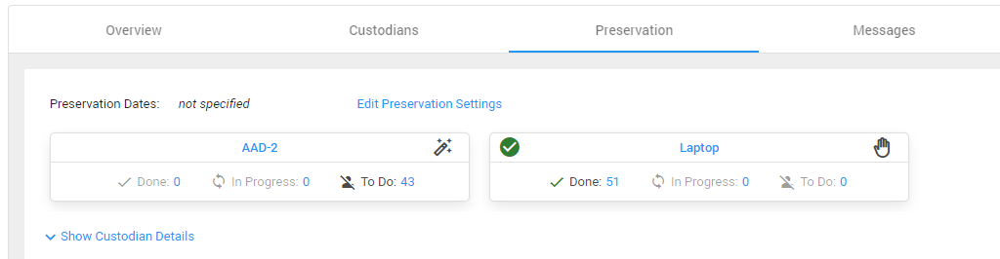
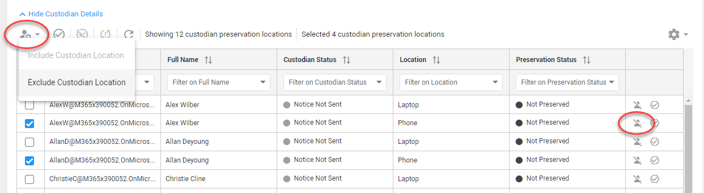
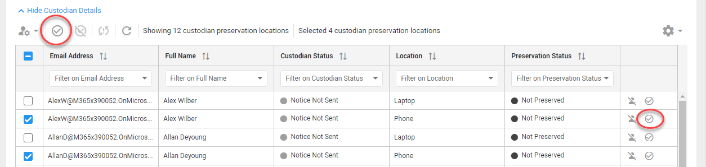

Edit Preservation Settings
-
In Draft or Issued state, select Edit Preservation Settings.

-
The Hold Preservation Settings window will open.

Here you can:
-
Define a Start and End date
-
Select the locations from which data needs to be preserved.
-
Custodial: Turn on or off for specific custodians
-
Non-Custodial: Turn on or off for groups of custodians. If turned on, click
 to select which sites to include.
to select which sites to include.
-
-
-
Click Save.

When defined, you will see an overview of all locations from which data will be preserved.
Each location is displayed on a card. Also, the number of custodians that are preserved (Done), that are 'In Progress' and that are still 'To Do' is shown.
By default, all custodians are added to each selected location to secure their data. Via the Custodian Details (select Show Custodian Details below the cards), you can exclude one or more custodians per location.
Select any of the blue links in each card to show the Custodian Details and filter the grid at the same time (for example, click the number behind 'To Do' to only view the
remaining preservations for that location).
Exclude multiple custodian/location-combinations via the button in the top left corner, or exclude a
single custodian/location-combination via the Exclude Custodian Location button at the end of the row:

With the icons in the top right corner of each card you can see if the preservation is done manually or automatically (with an in-place hold). With automatic preservation, the system will secure the data. With manual preservation, a person must perform an action (for example, create a forensic image of a laptop). Locations that are manually preserved (secured), can be marked as such via the menu or the button Set Custodian Location status to Preserved at the end of the row in the grid.
